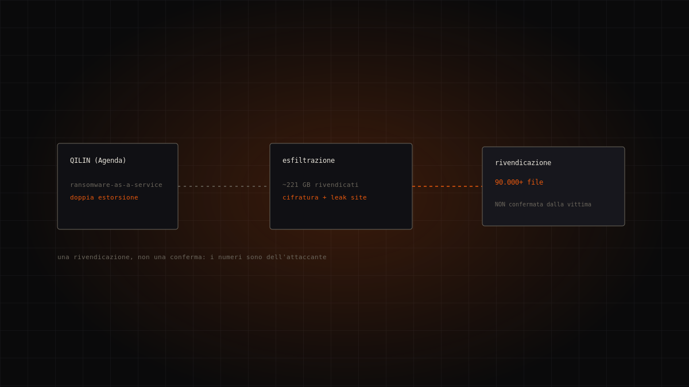
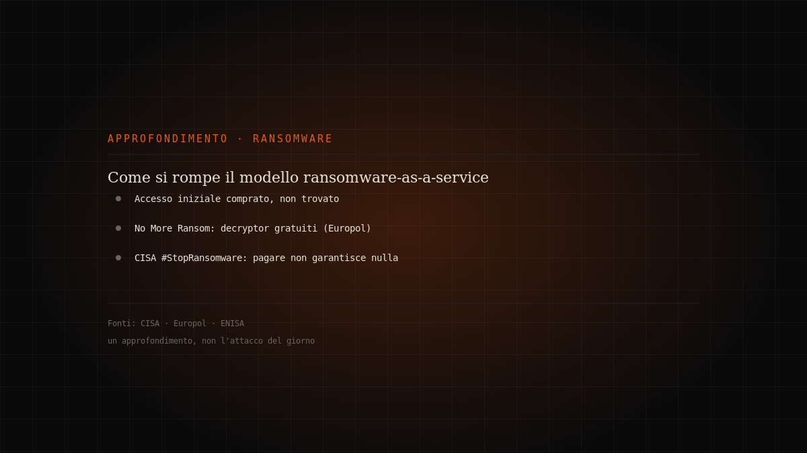
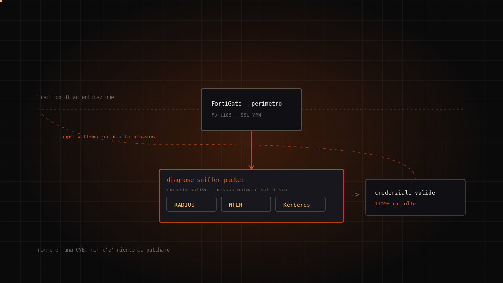
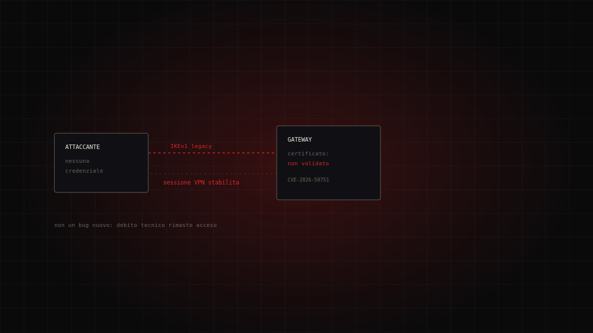
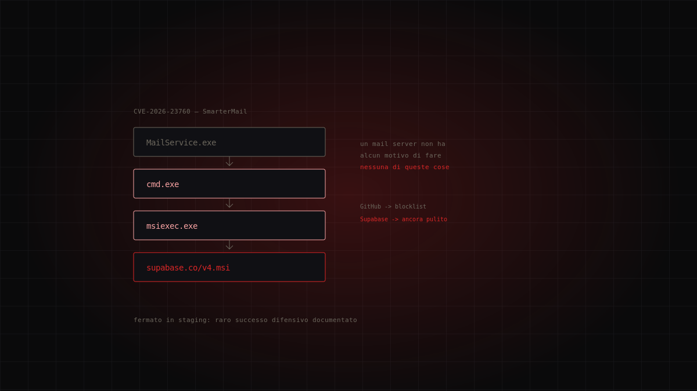
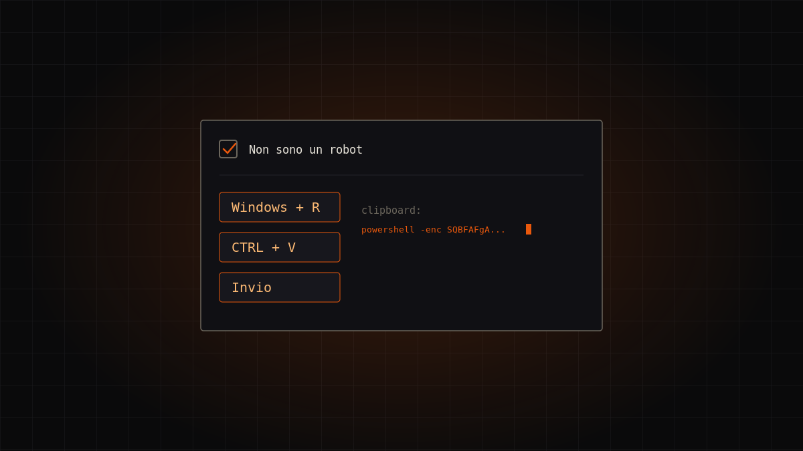

Tema · Minacce
Ransomware
Il modello di attacco più redditizio del decennio: come funziona e cosa fare (e non fare).

Dossier in questa sezione
6 dossierQilin rivendica Danone: cosa dice la fonte, e cosa resta da verificare
Il gruppo ransomware Qilin ha inserito Danone nel proprio sito di rivendicazioni, sostenendo di aver sottratto circa 221 GB di dati e pubblicando oltr…
Qilin (Agenda) — rivendicazione su leak site, non confermata dalla vittima · high
Continua a leggere →
Come si rompe il modello ransomware-as-a-service: cosa dicono davvero le fonti ufficiali
Il ransomware oggi è un'industria di servizi, non un lupo solitario: operatori che affittano il malware, affiliati che colpiscono, broker che ven…
Approfondimento editoriale · fonti ufficiali · high
Continua a leggere →
FortiBleed: non c'è una patch, perché non c'è una vulnerabilità
Circa metà dei firewall Fortinet esposti su internet ha le credenziali amministrative in mano a un access broker. Non c'è una CVE da patchare: ci…
Initial Access Broker russofono (non confermato) · high
Continua a leggere →
Qilin e il debito tecnico: come si entra in una VPN senza password
Un difetto logico nella validazione dei certificati durante lo scambio chiavi IKEv1 permetteva di aprire una sessione VPN Check Point senza conoscere …
Qilin · critical
Continua a leggere →
Due attaccanti, una rete: il caso Storm-2603 e la fine dell'intrusione singola
Storm-2603 sfrutta un bypass di autenticazione in SmarterMail per installare Velociraptor come C2 e mettere in scena il ransomware Warlock. Ma il dett…
Storm-2603 · critical
Continua a leggere →
Interlock, il ransomware che entra dalla porta principale
Interlock ha ribaltato il copione del ransomware: niente phishing, niente VPN bucata. La vittima visita un sito legittimo compromesso, vede un finto C…
Interlock · high
Continua a leggere →Il tema in breve
Cos'è e come funziona
Il ransomware è malware che blocca dispositivi o cifra i file, chiedendo un riscatto per restituirne l'accesso. Il modello si è evoluto nella doppia estorsione: prima di cifrare, gli attaccanti esfiltrano i dati e minacciano di pubblicarli. Pagare non garantisce di riottenere i dati e alimenta il mercato: la raccomandazione condivisa delle autorità è non pagare.
La prevenzione funziona
La difesa più efficace è nota e poco affascinante: backup offline verificati, aggiornamenti tempestivi, autenticazione a più fattori, riduzione delle esposizioni su internet. Il progetto No More Ransom — iniziativa di Europol e polizia olandese con l'industria — offre un repository gratuito di strumenti di decifratura e una guida alla prevenzione. Per alcune famiglie esiste già un decryptor: prima di disperare, conviene controllare.
Se sei colpito
Isolare i sistemi, preservare le prove, avvisare le autorità competenti (in Italia il CSIRT Italia) e valutare con un incident responder. La fretta di “rimettere tutto in piedi” è la nemica della bonifica: un ripristino affrettato su un ambiente ancora compromesso riporta l'attaccante dentro.
Domande frequenti
- Conviene pagare il riscatto?
- No. Le autorità sconsigliano di pagare: non garantisce il recupero dei dati e conferma agli attaccanti che il modello funziona.
- Esistono strumenti gratuiti di decifratura?
- Sì, per diverse famiglie di ransomware. Il progetto No More Ransom di Europol raccoglie decryptor gratuiti e va controllato prima di ogni altra decisione.